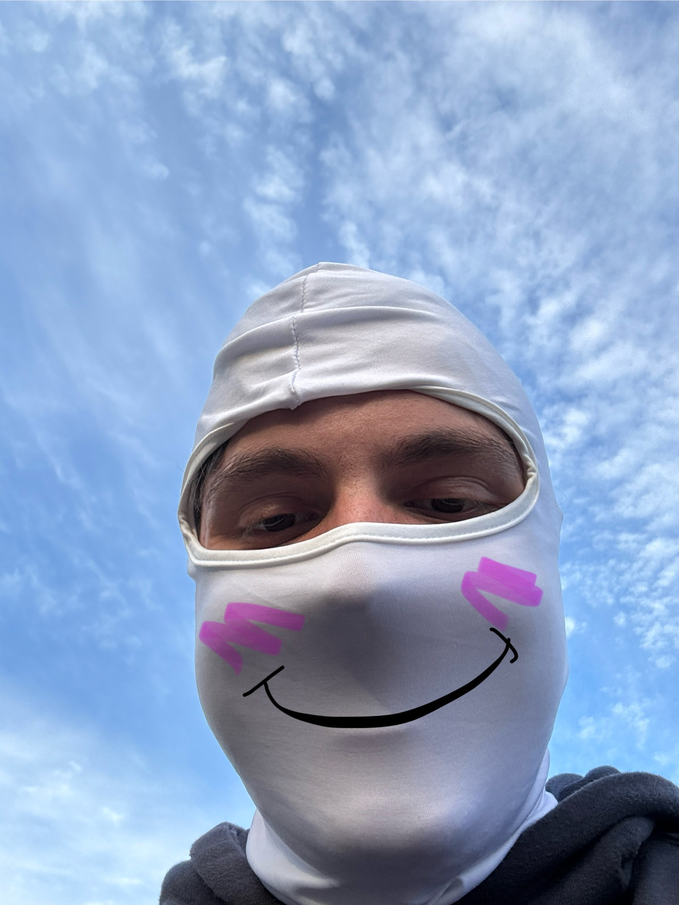

So what do I do with the car now that it's been through all those trials and had all this work done to it? Well, the only thing you can do really, RACE! Through the wonderful club here at JMU, Madison Motorsports, I have been fortunate enough to be able to take my car on the track as fast as I can a few times now. In fact, by the time this website is finished, I will likely be heading to another event in the coming week. Some of the tracks I've been to include Summit Point and Virginia International Raceway, though our very own College Cup against VT is held at Summit Point mainly. It's always a blast to see and be in cars flying around a track and it is the main reason I've stuck with this hobby as much as I have.
So what now?
Well if anything that was in this website interested you, my first spot to recommend diving into would be Madison Motorsports here at JMU. Lots of great guys and tons of great events to get people of all knowledge levels into the world of automotives. If you would have any interest in that, please enter your email in the space below so that I can pass it on to the exec team in the club. You can also find their website in the link as well. Other than that, that's it. Thank you for taking a look at my hobby, and have a good one!
Madison Motorsports Website
